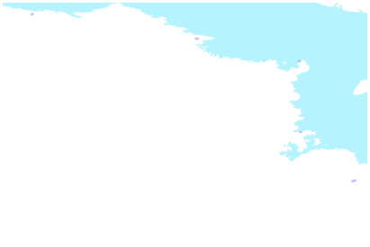

| Métadonnées | |
|---|---|
| Titre abrégé | Villages nordiques (Ortho mosaïques) |
| Description | Couvre les villages inuits : Aupluk, Kangiqsujuaq, Kuujjuaq, Quaqtaq, Salluit, Umiujag situés au nord du 55e parallèle. |
| Sujets |
|
| Auteur | Géoboutique Québec - Ministère de l'Énergie et des Ressources naturelles |
| Données géospatiales | |
| Type de représentation spatiale | matricielle |
| Nombre d'objets géometriques | EPSG:32186 EPSG:32187 EPSG:32189 |
| Échelles (dénominateur) | 10000 |
| Distance au sol | 0.25m |
| Étendue temporelle | de 2003 à 2004 |
| Boîte géographique |  |
| Contact | |
| Cartothèque de l'Université de Montréal Tél. 514 343-8038 Fax 514 343-8008 520, chemin de la Côte-Ste-Catherine, Université de Montréal MontréalQuébecH2V 2B8 Canada carto@umontreal.ca |
|